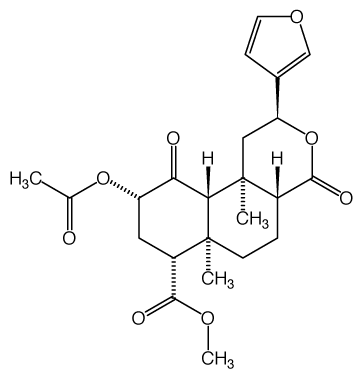
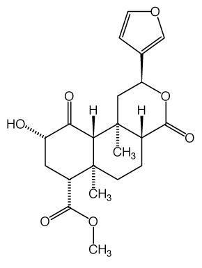

Studies of Salvia divinorum (Lamiaceae), an Hallucinogenic Mint
from the Sierra Mazateca in Oaxaca, Central Mexico1
(HTML by Arachnophilia)
Economic Botany 41(2), 1987, pp. 283-291.
L.J. VALDÉS III,2,3 G.M. HATFIELD,2 M. KOREEDA,3 and A.G. PAUL2
-------------------------------------------------------
1Received 3 November 1986; accepted 2 February 1987
2College of Pharmacy and 3Department of Chemistry, the University of Michigan, Ann Arbor, MI 48109.
Salvia divinorum Epling & Játiva-M. is one of the vision-inducing plants used by the Mazatec Indians of central Mexico. The present status of research is summarized. Experiments with material collected at different Oaxacan sites confirmed that the mint has white (rather than blue) flowers with a purple calyx and that flowering is induced by short daylength.
Spanish conquistadores arriving in Mexico during the 16th century noted native medico-religious uses of vision inducing plants such as peyotl (peyote, Lophophora williamsii (Lem. ex Salm-Dyck) Coult.), teonanactl (Psilocybe and related mushrooms), ololiuqui (the morning glories, Turbina corymbosa (L.) Raf. and Ipomoea violacea L.) and others (Bourke 1891; Schultes and Hoffman 1980; Urbina 1899; 1903). The New World came under the jurisdiction of the flourishing Spanish Inquisition, and Indian utilization of hallucinogenic plants was anathematic to the clergy (Aguirre Beltrán 1973). The identities of teonanactl (flesh of the gods) and ololiuhqui were forgotten for centuries (Schultes 1941b; Wasson and Wasson 1957). Expeditions to remote areas of central Mexico during the 1930s found that isolated peoples, including the Mazatecs of Northeastern Oaxaca, had continued to use hallucinogenic plants in ritual healing (Reko 1945; Schultes 1941a). The investigations of Wasson and colleagues were largely responsible for the introduction of Mazatec psychotropic plants to the outside world (Heim and Wasson 1958; Wasson 1962, 1963, 1980; Wasson and Wasson 1957; Wasson et al. 1974).
Along with rediscovery of ritual employment of mushrooms and morning-glory seeds, investigators reported the use of another divinatory plant by the Mazatec Indians. Johnson (1939) noted a vision inducing "tea" prepared from the leaves of an hierba María (the Virgin Mary's herb). Reko (1945) cryptically referred some unidentifiable leaves he collected in the Sierra Mazateca. Weitlaner (1952) described a ceremony using a "yerba de María". In 1957 Gómez Pompa collected non-flowering specimens (AGP 87556 and 93216, MEXU) of a purportedly hallucinogenic Salvia known as xka (ska) Pastora (the leaves of the shepherdess). Later, Wasson and Hoffman obtained a flowering specimen without visiting the collection site (Hoffman 1980; Wasson 1962). They gave the plant to Carl Epling, who had revised the New World Salvia subgenus Calosphace (Epling 1939). Epling and Játiva-M. assigned this new species, Salvia divinorum Epling and Játiva-M. (Lamiaceae), to section Dusenostachys (containing about 10 other species) (Fig. 1-3).
MAZATEC USE OF SALVIA DIVINORUM
There is little information concerning the Mazatec's existence before arrival of the Spaniards. Twenty thousand people, Including Don Alejandro Vicente, a curandero (healer) who was our informant, were forced to leave their homelands upon construction of the Miguel Alemán Dam during the 1950's (Barabas and Bartolomé 1973; Benitez 1973; Estrada 1977; Munn 1979; Villa-Rojas 1955; Weitlaner and Hoppe 1969). Don Alejandro told us that he used S. divinorum in ritual divination and curing (Valdés et al 1983). The foliage is gathered as needed (it purportedly loses psychotropic activity on drying), although it may be wrapped in leaves of Xanthosoma robustum Schoff (and other spp.) to keep it fresh for a week. Only the leaves are employed in the preparation of medicines; a dose is measured by counting them out in pairs. Taken in small doses (an infusion prepared from four or five pairs of fresh or dried leaves), the plant acts as what we interpreted to be a tonic or panacea. It purportedly regulates eliminatory functions (defecation and urination) and cures "anemia," "headache," and "rheumatism." It also "cures" the disease "panzón de barrego," translated as a swollen belly caused by a sorcerer's evil curse. In large doses (an infusion made from 20 to over 60 pairs of fresh leaves) the plant acts as a mild but effective hallucinogen. The leaves may be eaten entire (Cortés 1979; Wasson 1962), but they are often crushed in water to prepare an infusion, which is then drunk (Hofmann 1980; Valdés 1983; Valdés et al. 1983; Wasson, 1962). The infusion is often preferred to taking the leaves due to their extreme bitterness (our chemical investigations indicated this is probably due to high concentrations of water soluble tannins). Depending on the type of cure, ska María Pastora may be taken by the patient, the curandero, or both.
The Mazatec names for S. divinorum associate it with the Virgin Mary. When it is taken to induce a visionary experience, the "timidness of Mary" supposedly allows the vision to take place only in quiet or darkness. Given the Salvia infusion at Don Alejandro's home, Valdés (1983; Valdés et al. 1983) noted that village noises prevented full manifestations of its effects. However, on returning to the room where the researchers were staying, he underwent an experience that surprised him by the vividness of its apparent "reality." He found himself in an open meadow conversing with and holding on to a being in a white robe. It was an astounding visual, oral/aural, and tactile hallucination. Don Alejandro said the effects of the Salvia were similar to those produced by ingestion of morning-glory seeds. Taking an infusion of the morning-glory seeds under Don Alejandro's supervision at a later date, Valdés noted parallels between the two experiences. Both had a duration of several hours, and the subject eventually drifted off to sleep. A side effect common to both experiences is muscular incoordination. Because both plants are psychotropically weaker than vision inducing mushrooms, Don Alejandro used them to a greater extent, since he felt they were less "dangerous." He told us that after becoming experienced with the Salvia, a prospective curandero progresses to the morning-glory seeds and finally to the mushrooms. The obscurity of this mint, its bitter taste, and a misunderstanding of its psychotropic effects have kept it from becoming a recreational drug (Díaz 1975; Foster 1984; Hofmann 1980; Valdés 1983; Valdés et al 1983; Wasson 1962). Díaz (1975) reported that young people from Mexican cities travel to the Sierra Mazateca and purchase dried leaves of S. divinorum to make into cigarettes and smoke as a marijuana substitute. The effect is reportedly milder than that of Cannabis.
CHEMISTRY OF SALVIA DIVINORUM
Hofmann was the first to isolate and identify the psychoactive ingredients in the Mexican mushrooms and morning-glory seeds. He later made chemical studies of S. divinorum, but was unable to isolate and identify the compound(s) responsible for the plant's activity in human beings (Hofmann 1964, 1980). Work by Díaz (1975) suggested that the Salvia contained alkaloids. In 1980 we began a bioassay directed analysis of leaves from plants grown at the Matthaei Botanical Gardens. Two diterpenes (Fig. 4) were eventually isolated (Valdés et al. 1984); one of them caused sedation in mice when tested in a modification of Hall's open field (Brimnlecombe and Greene 1962; Ryall 1958; Turner 1965; Valdés 1983). Normal mice remain active in the field for at least 30 min before finally resting; however, those given intraperitoneal doses of compound 1 were sedated in the field (compound 2 was inactive). Diterpene 1 is apparently not very toxic, as we have given it intraperitoneally to mice in doses up to 1 g/kg with apparent complete recovery after a few hours (the mice were observed for a week without incident; no necropsies were performed). Since the mice obviously not report "visions," we also dosed them with mescaline (an hallucinogen), secobarbital (a sedative-hypnotic), a partially purified ether extract of Cannabis sativa, and a pharmacologically active diterpene, forskolin. All compounds produced a sedation in mice when tested in the open field; that produced by mescaline was similar to the activity of the Salvia compound (unpublished data).
|
 |
 |
|
Salvinorin A (1) |
Salvinorin B (2) |
Fig. 4.Salvinorins A (1) and B (2) isolated from S. divinorum.
We named the new terpenoids divinorins A (1) and B (2), but later found that Ortega et al. (1982) previously isolated a compound, salvinorin, from S. divinorum that was identical to 1. Therefore the diterpenes should be known as salvinorins A and B respectively. In our studies of the mint's activity we noticed that salvinorin A was not so active as partially purified Salvia extracts in the open field. Further investigations have led to isolation of more diterpenes structurally related to 1. We are presently in the process of characterizing and testing these compounds for pharmacological activity. If salvinorin A and the new compounds we isolated from the mint prove to display hallucinogenic activity in humans, it will mean addition of a new class of compounds (the terpenes) and eventually new plant genera to the psychotropic pharmacopoeia. Diterpenes similar in structure to the salvinorins have been isolated from the ornamental S. splendens (Savona et al. 1978, 1979), as well as several other species of New World Salvia Although only a few of the several hundred species in subgenus Calosphace have been chemically investigated to date, diterpenes could prove to be very useful as chemotaxonomic markers in determining relationships within the subgenus.
BOTANICAL OBSERVATIONS ON SALVIA DIVINORUM
Wasson (1963) suggested that S. divinorum might be the plant the Aztecs knew as pipiltzintzintli ("most noble prince" or "venerable little children"); this name has become associated with the mint in recent literature (Emboden 1979; Foster 1984; Schultes 1976). Aguirre Beltrán (1973) summarized the data on pipiltzintzintli contained in the Inquisitorial Archives. It was apparently an hallucinogenic plant that had male and female varieties. All plant parts, including the roots and flowers were used medicinally (no mention was made of the seeds), and it was cultivated for such purposes. Aguirre Beltrán, claiming that pipiltzintzintli was actually ololiuhqui, presented a convincing argument for his assumption. Investigators have shown that the leaves and stems (aerial portions) of both Turbina corymbosa and Ipomoea violacea contain significant amounts of the psychotropic alkaloids found in their seeds (Staba and Laursen 1966; Taber et al. 1963). Díaz (1979) cited a contemporary reference (Alzate 1772) that identified pipiltzintzintli as Cannabis. Although the morning-glories and cannabis are likely candidates, a precise botanical identification of pipiltzintzintli remains uncertain. Association of S. divinorum with the ancient Aztec plant is tenuous at best.
In describing S. divinorum, Epling stated that the flowers had a blue calyx tube and corolla, making an error that has endured in the literature (Foster 1984; Schultes 1976; Schultes and Hofmann 1980). Epling had a living specimen that he cultivated and presented to the botanical garden at the University of California, Los Angeles (accession 63-104). A living sample of this material is at the University of California, Berkeley (accession 76.100). After propagating material from these collections, Emboden correctly described the flowers as having a white corolla surrounded by a violet calyx (Emboden 1979, pers. comm. 1980). Until our expedition to Mexico, all S. divinorum growing in the United States was apparently descended from this single specimen (B. Bartholomew, pers. comm 1980; D.S. Verity, pers. comm. 1980; R.G. Wasson, pers. comm. 1980).
Salvia divinorum is reported to be a cultigen that rarely blooms (and then only when the branches are over 7 ft long) and apparently never sets seed (Emboden 1979; Foster 1984; R. Ornduff pers. comm. 1980; Wasson 1962). Nothing is known about natural pollinators, but the plant is parasitized by several species of insects (Díaz 1975). Don Alejandro told us that ska María pastora could be found over wide areas of the Mazatecan highlands. But Cerro Rabon is a tall (2,100 m) and still relatively inaccessible mountain. Mazatecan legends consider it to be a semidormant volcano, with a magical lake at its summit. It is supposedly populated by local gods, demons and magical beings (Benitez 1973; Espinosa 1961; Incháustegui 1977). Therefore, after observing the localities in which the Salvia grew, we believe the mint is collected in the highlands and planted in more accessible places, where it becomes naturalized. It is doubtful that the Salvia is a true cultigen. Among flowering specimens we collected on Cerro Quemado, one (Fig. 1) was only about 1 m tall. We saw remains of flower spikes in a stand on Cerro Rabón near the village of Ayautla. Seeds (i.e., mericarps) were not found at either site. During our conversations Don Alejandro told us that the flowers produced seed that could be planted to grow the Salvia. While growing it for chemical research, we performed experiments that clarified some of the botanical questions surrounding the plant.
In addition to our collections of living specimens from both sites, we were able to obtain cuttings of plants asexually propagated from the original specimen obtained by Wasson and Hofmann in the village of San José Tenango, Oaxaca (B. Bartholomew, pers comm. 1980; D.S. Verity, pers. comm 1980; R.G. Wasson pers. comm. 1980). From herbarium sheets of Oaxacan collections, we noted that flowering specimens were collected only between late August and March, a time of short days (Valdés 1983). In Mexico City (which is not far north of the collection localities), daylength reaches a maximum of 13h in June and decreases to about 12 h in October (Salisbury and Ross 1978). Although most plants affected by daylength need exposure to a certain critical dark period to begin the development of flower buds, some need a tapered decrease in daylength to induce flowering (Bickford and Dunn 1973). Using this information, we devised a series of experiments.
FLOWER INDUCTION EXPERIMENTS
Preparations
Round plastic pots of 25 cm diameter and 25cm depth were filled with a mixture of topsoil, peatmoss, vermiculite, and perlite (4:2:1:1 vol/vol). A rooted 10-20 cm Salvia stem cutting (two or three nodes) was placed in each pot. Plants were watered as necessary. They were fertilized weekly with 1.0 l of a 2 tsp/5 gal solution of a 15-30-15 soluble fertilizer containing trace elements (Stern's Miracle-Gro®, with 0.05% each of Cu, Mn, and Zn as the sulfates and 0.1% Fe as a chelate) with 1 ml of an 85% phosphoric acid solution added to counteract basicity. This routine was used for all experiments.
Outdoor and greenhouse experiments
About 50 plants were cultivated in an Ann Arbor garden during summers. They were put in a greenhouse (Matthaei Botanical Gardens) in September 1980 and placed on 28 in tall 6 ft by 17ft benches. Minimum greenhouse temperature was 10°C. Maximum temperature (10-30°C) depended on outside conditions.
Experimental results
Buds were observed in late October. Flowering began on 10 Nov and continued until early January 1981. All specimens bloomed. Similar results occurred during 1981 and 1982. In autumn 1983 another research group used artificial lighting to extend greenhouse daylength, which caused the Salvia to abort flowers and revert to vegetative growth.
In the green house at a northern latitude S. divinorum elongated rapidly several feet in height shortly before flowering (Fig. 2). Although the mint was normally nearly devoid of odor, its upper leaves and flowering stalks became strongly aromatic as buds developed. We always observed pubescent white flowers with a purplish to blue-violet calyx. Sometimes, just before opening, the tip of the corolla displayed a lavender tinge, which eventually disappeared. The corolla was usually shed within 72h after complete opening.
Plants collected on Cerro Quemado were crossed with descendants of Epling's original specimen on 19 and 21 Nov 1980. Previous trials and other information (Emboden 1979; R. Ornduff, pers. comm. 1980) indicated that the species is probably self incompatible. Of 14 hand-pollinated flowers (later protected by glassine envelopes), four set seed, which was collected on 16 Dec 1980 (Fig. 3). Our attempt to grow the seeds in a growth chamber failed when it overheated to 75°C, drying their medium and killing them (the mature plants in the chamber died to the soil level, but soon grew again).
Growth chamber experiments
Sherer Environmental Chambers models CEL-512-37 and CEL-34-14 were freshly outfitted with incandescent (93W) and cool white VHO fluorescent bulbs. Eleven plants from each of the three sources were divided between the two chambers. Plant-top light-intensity varied from 2,800-3,300 ft-c, depending on plant height and the chamber involved. Controls were set for maximum relative humidity (measurements varied between 50 and 100%). Temperature was set at 22°C day (16H) and 17°C night (8 H). Plants were grown under these conditions for 12 wk. Beginning 24 Jan 1980, daylength was decreased from 16 to 11 h over a 4 wk period.
Experimental results
Buds were noted on 4 Apr 1980; flowering branches were collected on 20 Apr 1980 (Valdés s.n., 22 Oct 1980, MICH). All plants flowered at a height less than 1.0 m; the flowers had a purplish calyx and white corolla. Repeating the experiments with an abrupt change from 16 h to 11 h days indicated tapered decreases in daylength were not necessary to induce flowering. Increasing daylength to over 12 h caused plant to revert to vegetative growth and abort flowers (Valdés s.n., 15 June 1981, MICH). Later a malfunctioning timer switch indicated that less than a week of 24h days induced this reversion, even if conditions were returned to short (11h) days.
DISCUSSION AND CONCLUSION
The greenhouse and growth-chamber experiments indicated that S. divinorum is an obligate short-day plant. Plant height is a minor factor in flower development, as several (growth chamber) specimens were less than 0.5 m tall when they flowered. Pollination experiments showed that the mint is probably self-sterile, but it remains to be demonstrated that S. divinorum will set viable seed.
To test for the hallucinogenic activity of S. divinorum in human beings, we drank the infusion of the leaves and waited for the effects to occur. Within 30 min we began to see visions, which lasted for several hours. This allowed rapid confirmation of the mint's psychotropic activity. But more interesting from a therapeutic standpoint are the other properties attributed to the plant; properties that are much more difficult to assess. Are these concepts that are translatable into our western (orthodox) healing theory, or is ska María Pastora being used as a magical treatment (for a placebo effect)? Extended observations in the field by an acute observer would undoubtedly be more fruitful than immediate attempts to isolate compounds responsible for these purported activities.
Although all recent information about the use of this mint has been gathered from Mazatec informants, the early reports of Reko and Weitlaner indicate that other tribe may have used it also. Reko (1945) alluded to use of the divinatory leaves by the Cuicatecs (in the district of Cuicatlán) as well as by the Mazatecs. Weitlaner (1952) noted that a plant called "yerba" de la Virgen was used for divination by the Otomi people of Tulancingo in Hidalgo and suggested it could be the same species as the "yerba" de María used by the Mazatecs.
Much botanical work remains to be done on S. divinorum, from further investigations of its range, habitat, pollination, and distribution, to a final unraveling of the taxonomic and genetic questions that have been raised about the plant and its relationships within the genus.
ACKNOWLEDGEMENTS
Investigations were supported by funds granted by the College of Pharmacy, the University of Michigan, and an NIH research grant awarded to Dr. Koreeda. Bruce Bartholomew provided us with cuttings of S. divinorum from the University of California Botanical Gardens, Berkeley. The people who answered our letters (pers. com) were helpful.
LITERATURE CITED
Aguirre Beltrán, G. 1973. Medicina y mágia. Inst. Nac. Indigenista, Collección SEP/INI 1, México.
Alzate y Ramirez, A. 1772. El cañamo, algunas costumbres de los indios. Gacetas de Literatura de México 4:95-102 (Cited in Díaz, 1979)
Barabas, A., and M. Bartolomé. 1973. Hydraulic development and ethnocide: the Mazatec and Chinantec people of Oaxaca, Mexico. International Workers Group for Indigenous Affairs, Document 15. Copenhagen.
Benitez, F. 1973. Los Indios de México. Vol. III. 2nd. ed. Ediciones Era, México.
Bickford, E.D., and S. Dunn. 1973. Lighting for plant growth. Kent State Univ. Press, Kent, OH.
Bourke, J.G. 1891. Scatological rites of all nations. Loudermilk, Washington, DC.
Brimblecombe, R.W., and A.L. Green. 1962. Effects of monoamine oxidase inhibitors on the behavior of rats in Hall's open field. Nature (London), 194: 983.
Cortés, J. 1979. La medicina tradicional en la Sierra Mazateca. Actes du XLIIe Congrès, Paris: Societé des Americanistes 6:349-356.
Díaz, J.L. 1975. Etnofarmacología de algunos psicotrópicos vegetales de México. In J.L. Díaz, ed., Etnofarmacología de Plantas Alucinójenas Latinoamericanas, p. 135-201. Cuadernos Científicos CEMEF 4, México.
---------. 1979. Ethnopharmacology and taxonomy of Mexican psychodysleptic plants. J. Psychedelic Drugs, 11:71-101.
Emboden, W. 1979. Narcotic Plants, Rev. ed., Macmillan, New York.
Epling, C. 1939. A Revision of Salvia, Subgenus Calosphace. Repert. Spec. Nov. Regni Veg. Beih. 110:1-383.
---------, and C. Játiva-M. 1962. A new species of Salvia from Mexico. Bot. Mus. Leafl. 20:75-76.
Espinosa, M. 1961. Apuntes históricos de las tribus Chinantecas, Mazatecas y Popolucas (1910). In: H.F. Cline, ed., Papeles de la Chinantla III. Serie Científica, 7. Mus. Nac. Antropol., México.
Estrada, A. 1977. Vida de María Sabina. Siglo XXI, México(English: Estrada, A. 1981. Maria Sabina, her life and chants, Ross-Erickson, Santa Barbara, CA.).
Foster, S. 1984. Herbal Bounty. Peregrine Smith Books,Salt Lake City, UT.
Heim, R. and R.G. Wasson 1958. Les champignons hallucinogénes du Mexique. Edit. Mus. Nat. Hist. Paris.
Hofmann, A. 1964. Mexicanische Zauberdrogen und ihre Wirkstoffe. Pl. Med. 12:341-352.
------------. 1980. LSD, my problem child. McGraw-Hill, New York.
Incháustegui, C. 1977. Relatos del Mundo mágico Mazateco. Inst. Nac. de Antropol. Hist., México.
Johnson, J.B. 1939. The elements of Mazatec witchcraft, Etnol. Stud. 9:128-150.
Munn, H. 1979. The mushrooms of language. In M. Harner, ed., Hallucinogens and shamanism, p. 86-122. Oxford Univ. Press, New York.
Ortega, A., J.F. Blount, J.F. and P.S. Marchand. 1982. Salvinorin, a new trans-neoclerodane diterpene from Salvia divinorum (Labiatae). J. Chem. Soc., Perkin Trans. I: 2505-2508.
Reko, B.P. 1945. Mitobótanica Zapoteca. Private printing, Tacubaya, México.
Ryall, R.W. 1958. Effect of drugs on emotional behavior of rats. Nature 182: 1606-1607.
Salisbury, F.B., and C.W. Ross. 1978. Plant physiology. 2nd. ed. Wadsworth, Belmont, CA.
Savona, G., M.P. Paternostro, F. Piozzi, J.R. Hanson, P.B. Hitchcock, and S.A. Thomas. 1978. Salviarin, a new diterpenoid from Salvia splendens. J. Chem. Soc., Perkin Trans. I, 643-646.
----------, ------------, --------------, and ----------. 1979. Splendidin, a New trans-clerodane from Salvia splendens. J. Chem. Soc., Perkin Trans. I, 533-534.
Schultes, R.E. 1941a. Economic aspects of the flora of northeastern Oaxaca, Mexico. Ph.D. thesis, Harvard Univ., Cambridge, MA.
-------------. 1941b. A contribution to our knowledge of Rivea corymbosa, the narcotic ololiuqui of the Aztecs. Harvard Bot. Mus., Cambridge, MA.
-------------. 1976. Hallucinogenic plants, Golden Press, Western, New York.
-------------, and A. Hofmann. 1980. The botany and chemistry of hallucinogens. 2nd ed. Thomas, Springfield, IL.
Staba, E.J., and P. Laursen. 1966. Morning glory tissue cultures: growth and examination for indole alkaloids. J. Pharmm. Sci. 55:1099-1101.
Taber, W.A., R.A. Heacock, and M.E. Mahon. 1963. Ergot-type alkaloids in vegetative tissue of Rivea corymbosa (L.) Hall.f. Phytochemistry 2:99-101.
Turner, R.A. 1965. Screening methods in pharmacology. Academic Press, New York.
Urbina, M. 1899. Peyotes. Datos para su estudio. Anales Inst. Med. Nac. México 4:203-214 (Note: error - the author is anonymous).
Urbina, M. 1903. El peyote y el ololiuqui. Anales Museo Nac. México 7:25-48.
Valdés, L.J., III. 1983. The pharmacognosy of Salvia divinorum Epling and Játiva M. Ph.D. thesis, Univ. Michigan, Ann Arbor, MI.
----------------, J.L. Díaz, and A.G. Paul. 1983. Ethnopharmacology of ska María Pastora (Salvia divinorum Epling and Játiva-M.). J. Ethnopharmacol. 7:287-312.
----------------, W.M. Butler, G.M. Hatfield, A.G. Paul, and M. Koreeda. 1984. Divinorin A, a Psychotropic terpenoid, and divinorin B from the hallucinogenic Mexican Mint Salvia divinorum. J. Org. Chem. 49: 4716-4720.
Villa-Rojas, A. 1955. Los Mazatecos y el problema indígena de la cuenca del Papaloapan. Ediciones Inst. Nac. Indigenista, México.
Wasson, R.G. 1962. A new Mexican psychotropic drug from the mint family. Bot. Mus. Leafl. 20:77-84.
--------------. 1963. Notes on the present status of Ololiuhqui and the other hallucinogens of Mexico. Bot. Mus. Leafl. 20:161-193.
--------------. 1980. The wondrous mushroom. McGraw-Hill, New York.
--------------, G. Cowan, F. Cowan, and W. Rhodes, W. 1974 Maríia Sabina and her Mazatec mushroom velada. Harcourt Brace Jovanovich, New York.
Wasson, V.P. and R.G. Wasson. 1957. Mushrooms, Russia and history. Vol. II, Pantheon, New York.
Weitlaner, R.J. 1952. Curaciones Mazatecas. Anal. Inst. Nac. Antropol. Hist. México 4:279-285.
---------------, R.J. and W.Hoppe 1969. The Mazatec. In: R. Wauchope, ed., Handbook of Middle American Indians, Vol. 7, p. 516-522. Univ. Texas Press, Austin.